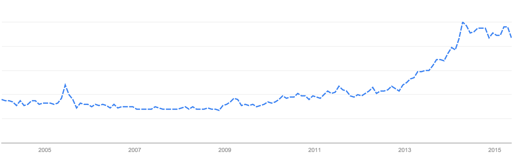
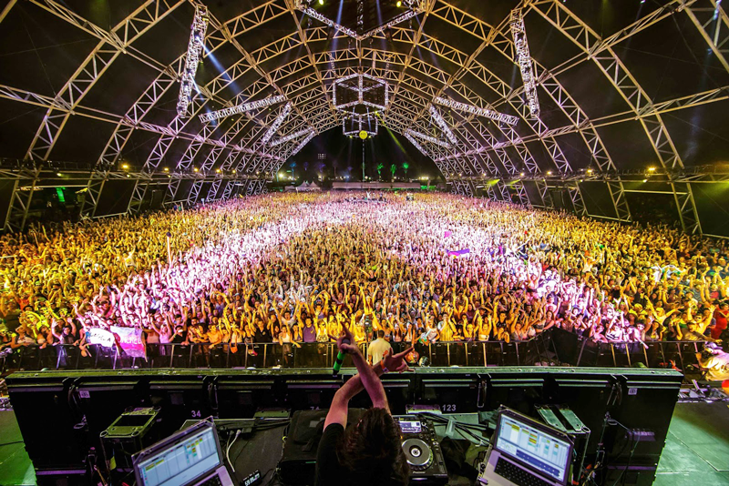

The Coachella Valley Music and Arts Festival may be America's top music festival. In 2014, Coachella grossed $78 million, breaking its record for gross ticket sales from the previous year. Artists at Coachella, like headliners AC/DC and Drake or newer stars Madeon and Sylvan Esso, represent the pulse of popular music.
My buddy Ilya Volodarsky wondered if Coachella increasingly features Electronic Dance Music (EDM). It turns out he's absolutely right. From a low of 32% in 2006, nearly half the bands in 2015 play electronic music:
What drives this growth? Rock artists (Ilya's favorite) have been dropping off the Coachella lineup. Rock made up nearly two thirds of Coachella's 2006 lineup and less than half this year:
The Coachella organizers might be reacting to a general change in musical taste in the past decade. According to Google search trends, EDM became 4x as popular between 2009 and 2014:

This growth leveled off over the past year and now may be the time for Coachella to find the next trend. Regardless, I'm buying 2016 tickets as soon they're released (typically 11 months in advance!). Hopefully I'll still be able to convince Ilya to come :-)

I used Mode, a collaborative SQL tool, to generate the graphs in this report. The raw data is from Wikipedia and includes some additional features like each artist's founding year and whether or not they headlined at Coachella. Here's the raw dataset and the electronic and rock reports. Hope you enjoy digging into the data!